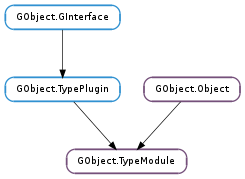

| Subclasses: | Anjuta.CModule, Gio.IOModule, Peas.ObjectModule |
|---|
| add_interface(instance_type, interface_type, interface_info) | |
| register_enum(name, const_static_values) | |
| register_flags(name, const_static_values) | |
| register_type(parent_type, type_name, type_info, flags) | |
| set_name(name) | |
| unuse() | |
| use() |
None
None
| Name | Type | Access |
|---|---|---|
| name | str | r |
| parent_instance | GObject.Object | r |
| use_count | int | r |
Bases: GObject.Object, GObject.TypePlugin
GObject.TypeModule provides a simple implementation of the GObject.TypePlugin interface. The model of GObject.TypeModule is a dynamically loaded module which implements some number of types and interface implementations. When the module is loaded, it registers its types and interfaces using GObject.TypeModule.register_type () and GObject.TypeModule.add_interface (). As long as any instances of these types and interface implementations are in use, the module is kept loaded. When the types and interfaces are gone, the module may be unloaded. If the types and interfaces become used again, the module will be reloaded. Note that the last unref cannot happen in module code, since that would lead to the caller’s code being unloaded before GObject.Object.unref () returns to it.
Keeping track of whether the module should be loaded or not is done by using a use count - it starts at zero, and whenever it is greater than zero, the module is loaded. The use count is maintained internally by the type system, but also can be explicitly controlled by GObject.TypeModule.use () and GObject.TypeModule.unuse (). Typically, when loading a module for the first type, GObject.TypeModule.use () will be used to load it so that it can initialize its types. At some later point, when the module no longer needs to be loaded except for the type implementations it contains, GObject.TypeModule.unuse () is called.
GObject.TypeModule does not actually provide any implementation of module loading and unloading. To create a particular module type you must derive from GObject.TypeModule and implement the load and unload functions in GObject.TypeModuleClass.
| Parameters: |
|
|---|
Registers an additional interface for a type, whose interface lives in the given type plugin. If the interface was already registered for the type in this plugin, nothing will be done.
As long as any instances of the type exist, the type plugin will not be unloaded.
| Parameters: |
|
|---|---|
| Returns: | the new or existing type ID |
| Return type: |
Looks up or registers an enumeration that is implemented with a particular type plugin. If a type with name type_name was previously registered, the GObject.Type identifier for the type is returned, otherwise the type is newly registered, and the resulting GObject.Type identifier returned.
As long as any instances of the type exist, the type plugin will not be unloaded.
| Parameters: |
|
|---|---|
| Returns: | the new or existing type ID |
| Return type: |
Looks up or registers a flags type that is implemented with a particular type plugin. If a type with name type_name was previously registered, the GObject.Type identifier for the type is returned, otherwise the type is newly registered, and the resulting GObject.Type identifier returned.
As long as any instances of the type exist, the type plugin will not be unloaded.
| Parameters: |
|
|---|---|
| Returns: | the new or existing type ID |
| Return type: |
Looks up or registers a type that is implemented with a particular type plugin. If a type with name type_name was previously registered, the GObject.Type identifier for the type is returned, otherwise the type is newly registered, and the resulting GObject.Type identifier returned.
When reregistering a type (typically because a module is unloaded then reloaded, and reinitialized), module and parent_type must be the same as they were previously.
As long as any instances of the type exist, the type plugin will not be unloaded.
| Parameters: | name (str) – a human-readable name to use in error messages. |
|---|
Sets the name for a GObject.TypeModule
Decreases the use count of a GObject.TypeModule by one. If the result is zero, the module will be unloaded. (However, the GObject.TypeModule will not be freed, and types associated with the GObject.TypeModule are not unregistered. Once a GObject.TypeModule is initialized, it must exist forever.)
| Returns: | False if the plugin needed to be loaded and loading the plugin failed. |
|---|---|
| Return type: | bool |
Increases the use count of a GObject.TypeModule by one. If the use count was zero before, the plugin will be loaded. If loading the plugin fails, the use count is reset to its prior value.